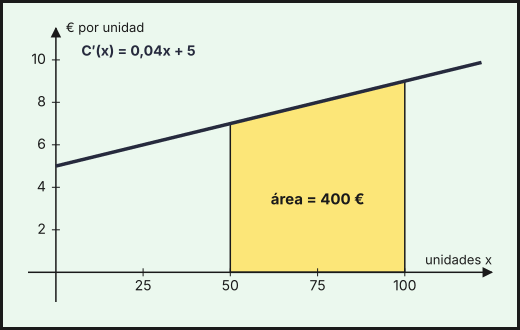
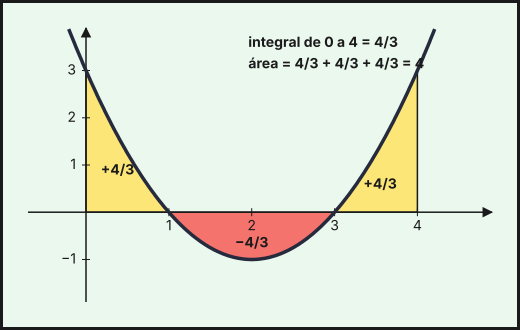
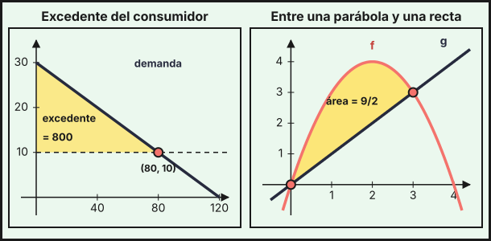

Integrales
1. Primitiva e integral indefinida
Una primitiva de \(f\) es una función \(F\) cuya derivada es \(f\): \(F'(x)=f(x)\). Si \(F\) es una primitiva, también lo es \(F+C\) para cualquier constante \(C\), así que el conjunto de todas ellas, la integral indefinida, se escribe
\[\int f(x)\,dx=F(x)+C\]
Integrar es el proceso inverso de derivar. Es lineal: \(\int\bigl(a\,f(x)+b\,g(x)\bigr)dx=a\int f\,dx+b\int g\,dx\).
Ejemplo (del coste marginal al coste). Si el coste marginal es \(C'(x)=0{,}04x+5\) (como en el tema 6), el coste es una primitiva: \[C(x)=\int(0{,}04x+5)\,dx=0{,}02x^2+5x+K\] La constante \(K\) se fija con un dato: si el coste fijo es 300 €, \(C(0)=300\Rightarrow K=300\), y \(C(x)=0{,}02x^2+5x+300\). Del mismo modo, si el ingreso marginal es \(I'(x)=100-4x\) y sin ventas no hay ingreso, \(I(x)=100x-2x^2\) (con \(I(0)=0\)).
2. Primitivas inmediatas
| \(f(x)\) | \(\displaystyle\int f(x)\,dx\) |
|---|---|
| \(k\) | \(kx+C\) |
| \(x^n\) (\(n\neq-1\)) | \(\dfrac{x^{n+1}}{n+1}+C\) |
| \(\dfrac1x\) | \(\ln\lvert x\rvert+C\) |
| \(e^x\) | \(e^x+C\) |
| \(a^x\) | \(\dfrac{a^x}{\ln a}+C\) |
Las raíces se escriben como potencias: \(\sqrt x=x^{1/2}\) y \(\dfrac1{x^2}=x^{-2}\). Con \(u\) una función de \(x\) y \(u'\) su derivada, las primitivas compuestas (la regla de la cadena al revés) son:
| \(f(x)\) | \(\displaystyle\int f(x)\,dx\) |
|---|---|
| \(u'\cdot u^n\) (\(n\neq-1\)) | \(\dfrac{u^{n+1}}{n+1}+C\) |
| \(\dfrac{u'}{u}\) | \(\ln\lvert u\rvert+C\) |
| \(u'\cdot e^{u}\) | \(e^{u}+C\) |
| \(u'\cdot a^{u}\) | \(\dfrac{a^{u}}{\ln a}+C\) |
| \(\dfrac{u'}{\sqrt u}\) | \(2\sqrt u+C\) |
Para aplicarlas, hay que tener exactamente \(u'\) delante; si falta una constante, se multiplica y divide por ella.
Ejemplos.
| Integral | Resultado |
|---|---|
| \(\displaystyle\int(3x^2-4x+5)\,dx\) | \(x^3-2x^2+5x+C\) |
| \(\displaystyle\int\left(\tfrac1x+e^x\right)dx\) | \(\ln\lvert x\rvert+e^x+C\) |
| \(\displaystyle\int\sqrt x\,dx\) | \(\tfrac23x^{3/2}+C\) |
| \(\displaystyle\int(2x+1)^4\,dx\) (con \(u=2x+1\), \(u'=2\)) | \(\tfrac12\cdot\dfrac{(2x+1)^5}{5}+C=\dfrac{(2x+1)^5}{10}+C\) |
| \(\displaystyle\int e^{3x}\,dx\) | \(\dfrac{e^{3x}}{3}+C\) |
| \(\displaystyle\int\dfrac{1}{3x+2}\,dx\) | \(\dfrac13\ln\lvert3x+2\rvert+C\) |
| \(\displaystyle\int\dfrac{2x}{x^2+1}\,dx\) (aquí \(u=x^2+1\)) | \(\ln(x^2+1)+C\) |
| \(\displaystyle\int x\,e^{x^2}\,dx\) (con \(u=x^2\), falta el factor 2) | \(\tfrac12e^{x^2}+C\) |
| \(\displaystyle\int\dfrac{x}{\sqrt{x^2+1}}\,dx\) (con \(u=x^2+1\)) | \(\sqrt{x^2+1}+C\) |
Siempre se puede comprobar el resultado derivándolo: debe salir la función original.
3. Integral definida y regla de Barrow
La integral definida \(\displaystyle\int_a^b f(x)\,dx\) mide el área con signo entre la gráfica de \(f\) y el eje \(X\) en \([a,\,b]\) (positiva si \(f\ge0\)). La regla de Barrow la calcula con una primitiva \(F\) cualquiera de \(f\):
\[\int_a^b f(x)\,dx=F(b)-F(a)=\Bigl[F(x)\Bigr]_a^b\]
Propiedades: \(\int_a^a f=0\); \(\int_a^b f=-\int_b^a f\); \(\int_a^b f=\int_a^c f+\int_c^b f\); y es lineal.
Ejemplo. \(\displaystyle\int_0^2(3x^2+1)\,dx=\bigl[x^3+x\bigr]_0^2=(8+2)-0=10\).
Ejemplo (coste de aumentar la producción). El coste de pasar de 50 a 100 unidades es la integral del coste marginal:
\[\int_{50}^{100}(0{,}04x+5)\,dx=\bigl[0{,}02x^2+5x\bigr]_{50}^{100}=(200+500)-(50+250)=400\text{ €}\]
que coincide con \(C(100)-C(50)=1000-600\). Es el área bajo la gráfica del coste marginal entre 50 y 100.

Ejemplo (exponencial). Una asociación gana nuevos socios a un ritmo de \(s(t)=120\,e^{-0{,}1t}\) socios por mes, \(t\) en meses desde su lanzamiento. En los primeros 10 meses ingresan
\[\int_0^{10}120\,e^{-0{,}1t}\,dt=\Bigl[-1200\,e^{-0{,}1t}\Bigr]_0^{10}=1200\,(1-e^{-1})\approx758{,}5\]
es decir, unos 758 socios (la primitiva de \(e^{-0{,}1t}\) es \(\frac{e^{-0{,}1t}}{-0{,}1}\)).
4. Cálculo de áreas
Área bajo una curva. Si \(f\ge0\) en \([a,b]\), el área es \(\int_a^bf\); si \(f\le0\), es \(-\int_a^bf\). Si \(f\) cambia de signo, hay que hallar los puntos de corte con el eje \(X\) y calcular por separado cada tramo, tomando valores absolutos.
Ejemplo. Para \(f(x)=x^2-4x+3=(x-1)(x-3)\) en \([0,\,4]\), con \(F(x)=\frac{x^3}{3}-2x^2+3x\):
| Tramo | \(\displaystyle\int f\,dx=F(b)-F(a)\) | Signo | Área |
|---|---|---|---|
| \([0,\,1]\) | \(\frac43-0=\frac43\) | \(+\) | \(\frac43\) |
| \([1,\,3]\) | \(0-\frac43=-\frac43\) | \(-\) | \(\frac43\) |
| \([3,\,4]\) | \(\frac43-0=\frac43\) | \(+\) | \(\frac43\) |
La integral \(\int_0^4f=\frac43\) (las partes se compensan), pero el área es \(\frac43+\frac43+\frac43=4\).

Área entre dos curvas. Si \(f(x)\ge g(x)\) en \([a,\,b]\), el área entre ambas es
\[\text{Área}=\int_a^b\bigl(f(x)-g(x)\bigr)\,dx\]
Pasos: (1) se hallan los puntos de corte igualando \(f(x)=g(x)\); (2) se ve cuál función está por encima en cada tramo; (3) se integra la diferencia (la de arriba menos la de abajo).
Ejemplo. El área entre \(f(x)=-x^2+4x\) y \(g(x)=x\): \(-x^2+4x=x\Rightarrow x(3-x)=0\Rightarrow x=0,\ x=3\); en \((0,3)\), \(f>g\) (por ejemplo, en \(x=1\): \(3>1\)). Entonces
\[\text{Área}=\int_0^3(-x^2+3x)\,dx=\Bigl[-\tfrac{x^3}{3}+\tfrac{3x^2}{2}\Bigr]_0^3=-9+\tfrac{27}{2}=\tfrac92=4{,}5\]
Ejemplo (curvas que se cruzan). Entre \(y=x\) e \(y=x^3\) en \([-1,\,1]\) se cortan en \(x=-1,\,0,\,1\), y cambia cuál está arriba: en \([-1,0]\) es \(x^3\) y en \([0,1]\) es \(x\). Por simetría el área es \(2\int_0^1(x-x^3)\,dx=2\left(\tfrac12-\tfrac14\right)=\tfrac12\).
Ejemplo (exponencial). Entre \(y=e^x\) e \(y=x+1\) en \([0,\,1]\) (donde \(e^x\ge x+1\)): \(\int_0^1(e^x-x-1)\,dx=\Bigl[e^x-\tfrac{x^2}{2}-x\Bigr]_0^1=e-\tfrac52\approx0{,}218\).
Aplicación: excedente del consumidor
Con la demanda \(q=120-4p\) del tema 2, el precio máximo que está dispuesto a pagar el comprador de la unidad \(q\) es \(p=30-\frac q4\). En el equilibrio se venden \(q=80\) unidades a \(10\) €. Los compradores que hubieran pagado más ahorran dinero: el excedente del consumidor es el área entre la curva de demanda y el precio de equilibrio:
\[\int_0^{80}\left(30-\frac q4-10\right)dq=\Bigl[20q-\frac{q^2}{8}\Bigr]_0^{80}=1600-800=800\]
Es el área de un triángulo de base 80 y altura 20, \(\frac12\cdot80\cdot20=800\), y equivale a 800 (miles de euros).

- \(F'=f\Rightarrow\int f\,dx=F+C\). Comprueba derivando.
- Inmediatas: \(\int x^n=\frac{x^{n+1}}{n+1}\) (\(n\neq-1\)), \(\int\frac1x=\ln|x|\), \(\int e^x=e^x\), \(\int a^x=\frac{a^x}{\ln a}\). Compuestas con \(u'\): \(\int u'u^n\), \(\int\frac{u'}{u}=\ln|u|\), \(\int u'e^u=e^u\).
- Barrow: \(\int_a^bf=F(b)-F(a)\). Del coste marginal al coste: \(C(b)-C(a)=\int_a^bC'(x)\,dx\).
- Área con \(f\) que cambia de signo: separar en los puntos de corte con el eje.
- Área entre curvas: \(\int_a^b(\text{arriba}-\text{abajo})\,dx\), con los límites en los puntos de corte.